Infrastructure solutions thatservice-page shape tomorrow
Delivering smart, sustainable, and future-ready engineering solutions across roads, bridges, tunnels, and urban infrastructure.
Roads
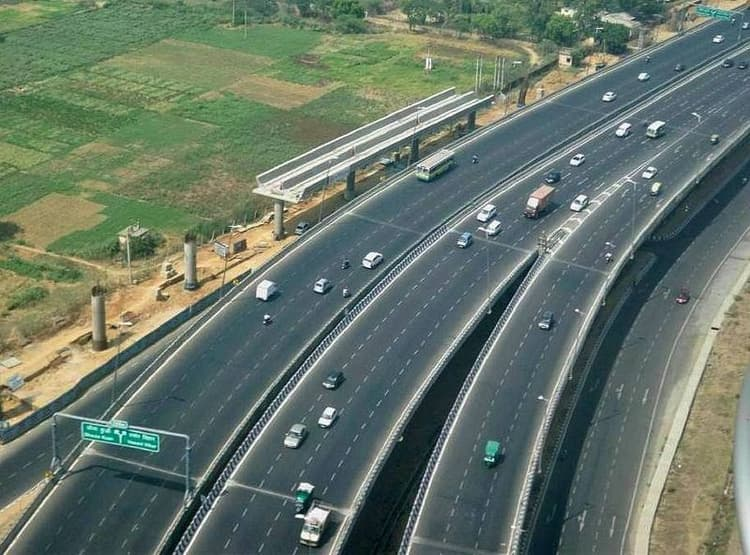
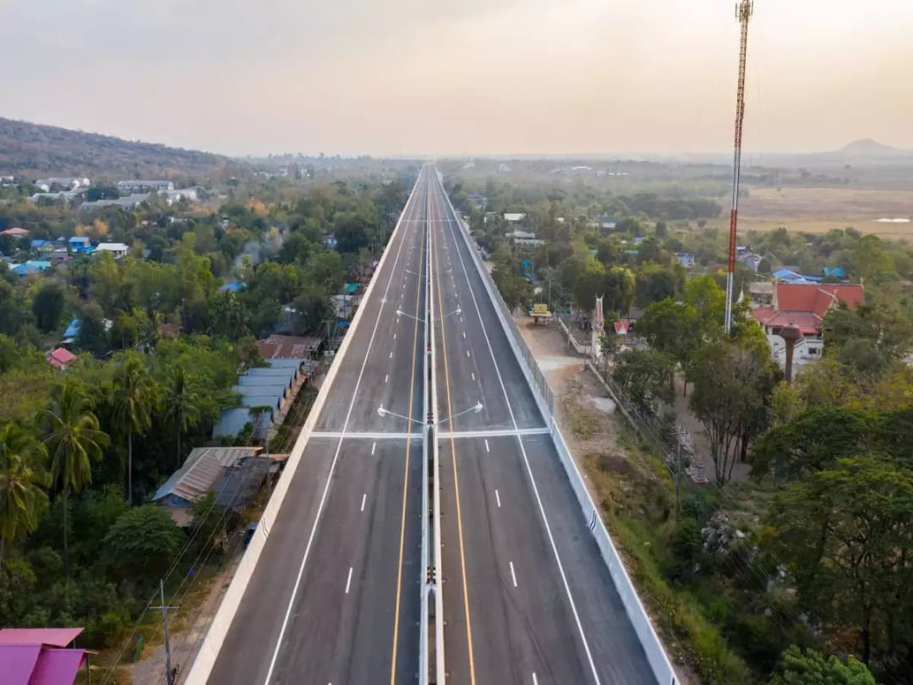
Building Enduring Connections: Roads
At RoadX, we understand the critical role that roads play in connecting communities, facilitating trade, and driving economic prosperity. Our team of skilled engineers and experienced project managers works collaboratively with clients to design, construct, and supervise the development of:
Highways & Expressways
At RoadX, we understand the critical role that roads and bridges play in connecting communities, facilitating trade, and driving economic prosperity. Our team of skilled engineers and experienced project managers works collaboratively with clients to design, construct, and supervise the development of:
Rural Roads
We recognize the unique challenges faced by rural communities in terms of accessibility and infrastructure development. Our team designs and implements rural road projects that improve connectivity to essential services, markets, and educational opportunities.
Tunnels
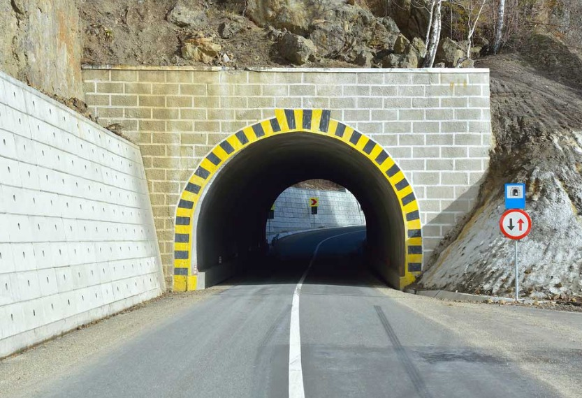
Tunneling Expertise RoadX Design & Consultants Overview
RoadX Design & Consultants specializes in the design, engineering, and project management of complex tunneling solutions within transportation infrastructure. Their tunneling expertise supports road and highway development in challenging terrains where surface roads are impractical.
Safe & Efficient Tunneling
At RoadX Design & Consultants, safety and efficiency are the cornerstones of our tunneling solutions. From concept to completion, we apply cutting-edge technologies, rigorous engineering standards, and proven construction methodologies to ensure every tunnel project is delivered with maximum operational safety, minimal environmental disruption, and optimal cost-effectiveness.
Urban Tunneling
Urban tunneling presents unique challenges — dense populations, existing infrastructure, limited space, and strict environmental controls. At RoadX Design & Consultants, we specialize in designing and delivering tunneling solutions that seamlessly integrate into the complex fabric of modern cities.
Urban Infrastructure

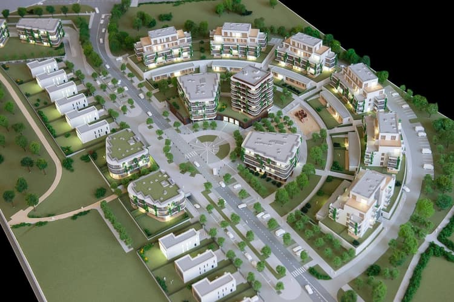
Shaping Livable Cities Urban Infrastructure Development
At RoadX, we are passionate about creating vibrant and livable cities. We offer a full spectrum of urban infrastructure development services, including:
Water Supply & Sanitation
Safe and reliable access to clean water and effective waste disposal systems are fundamental to public health and well-being. Our team designs and manages projects that ensure clean water distribution networks, efficient wastewater treatment plants, and robust sanitation systems.
Stormwater Management
Climate change has intensified the need for effective stormwater management solutions. We design and implement innovative stormwater drainage systems, green infrastructure projects, and flood protection measures to mitigate flooding risks and protect communities.
Smart City Development
We believe in harnessing the power of technology to create intelligent and efficient urban environments. We collaborate with clients to integrate smart technologies in areas like traffic management, waste collection, and energy efficiency, fostering sustainable and resilient cities.
Bridges
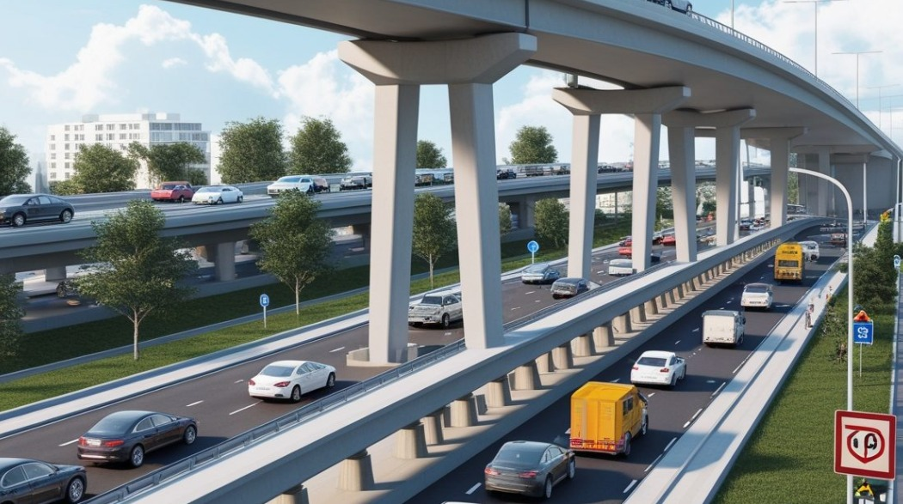
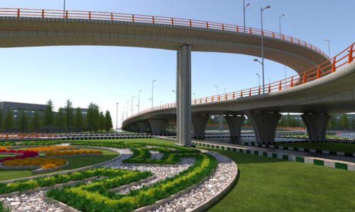
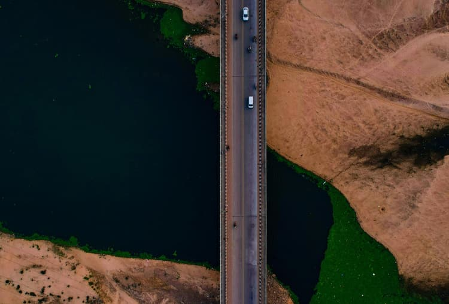
Building Enduring Connections: Bridges
At Roadx Designers & Consultants we understand the critical role that roads and bridges play in connecting communities, facilitating trade, and driving economic prosperity. Our team of skilled engineers and experienced project managers works collaboratively with clients to design, construct, and supervise the development of:
Bridges
Our bridge design expertise encompasses a broad spectrum, from elegant pedestrian bridges to complex multi-span structures. We prioritize aesthetics, functionality, and long-term sustainability, considering factors like traffic volume, seismic resilience, and ease of maintenance.
Highway Expressway
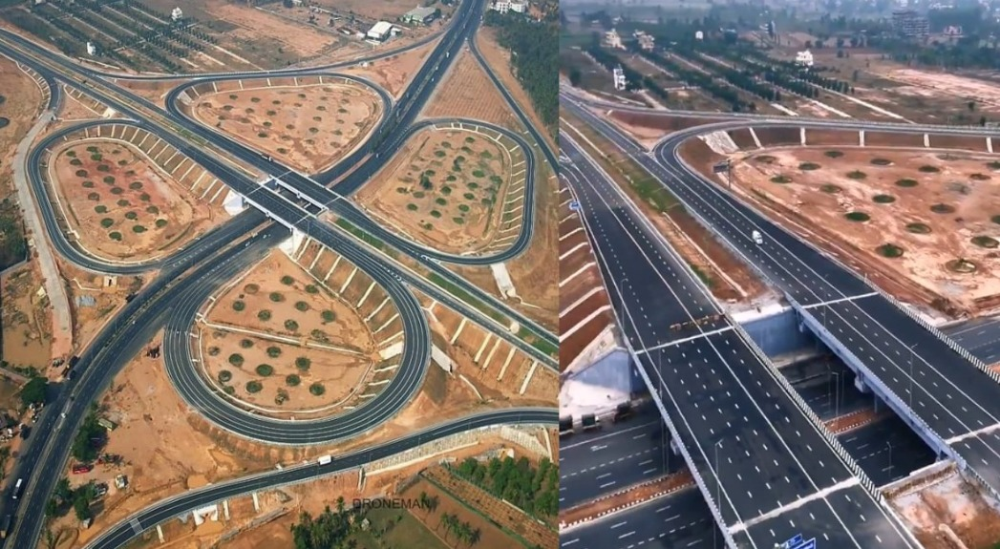
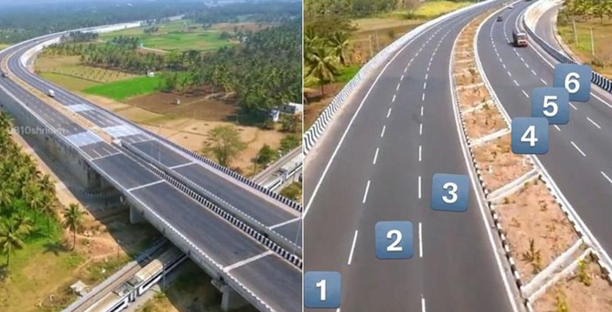
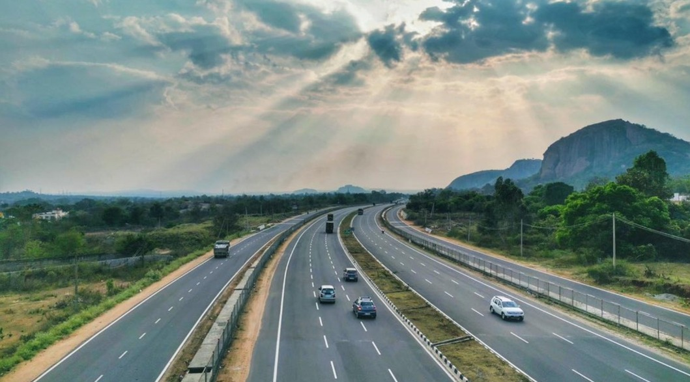
Highway Expressway
Roadx Designers & Consultants is a leading firm specializing in innovative and sustainable expressway design solutions. With expertise in planning, geometric design, and traffic engineering, we deliver high-speed corridors built for safety and efficiency. From concept to execution, Roadx ensures precision, performance, and future-ready infrastructure.
Expressway
Roadx Designers & Consultants delivers end-to-end engineering solutions for highways, expressways, and rural road networks. Our expertise spans smart alignment design, safety audits, and sustainable infrastructure tailored to every terrain. With a commitment to quality and innovation, we connect regions with roads built for the future.
Pavement Evaluation
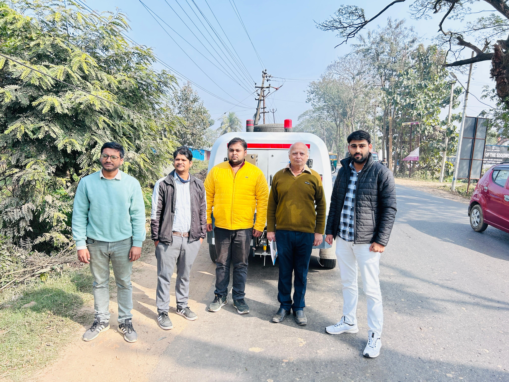
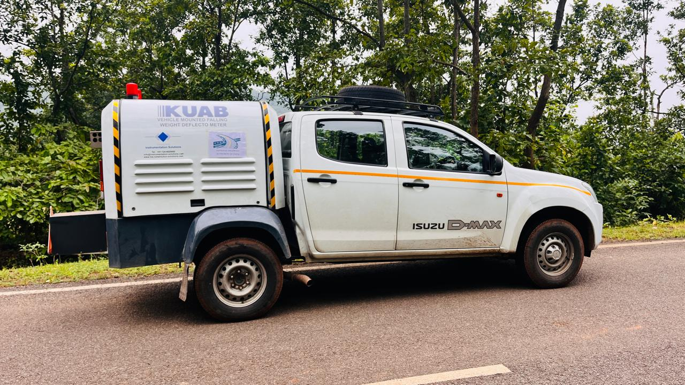
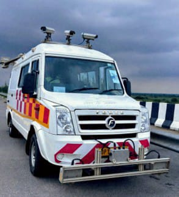
Pavement Evaluation Integrated Technologies
RoadX Design & Consultants offers advanced pavement evaluation services utilizing a suite of modern, non-destructive and data-driven technologies. Our approach combines surface condition monitoring, structural capacity analysis, and traffic characterization to support effective pavement management and rehabilitation planning.
Technologies & Methodologies:
Texture and International Roughness Index (IRI) measurements Ideal for rapid network-level condition assessments with minimal traffic disruption. * High-resolution cameras for automated surface distress identification * Laser profilers for longitudinal and transverse profiles
Road Safety Audit
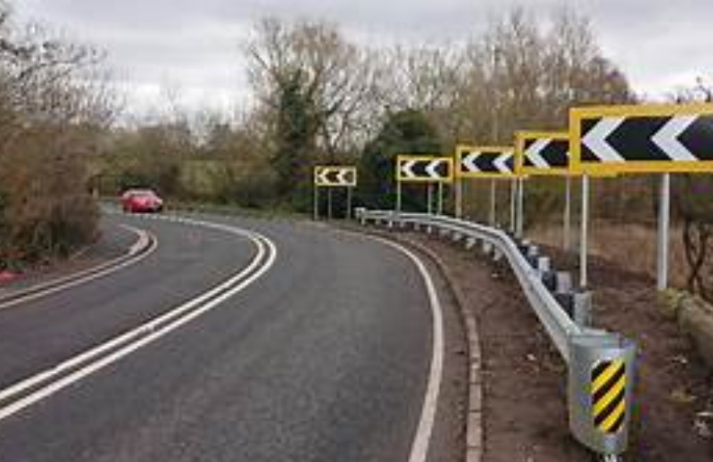
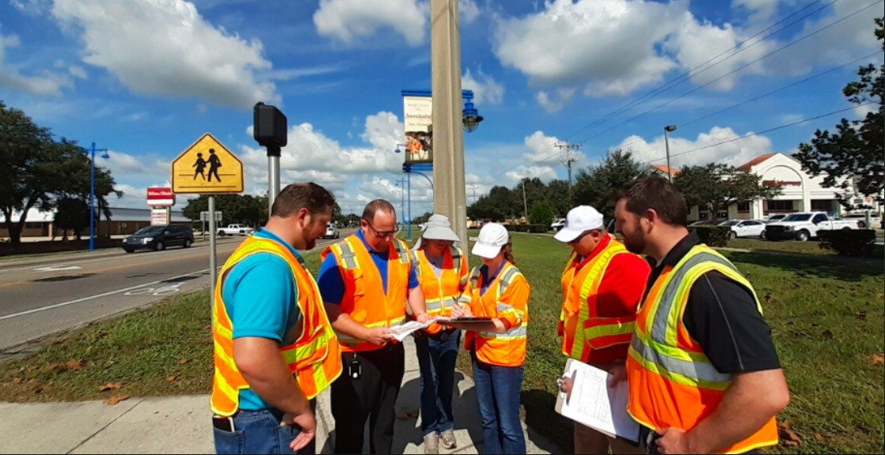
Road Safety Audit (RSA): Proactive Safety Assessment
A Road Safety Audit is a formal, systematic process conducted by an independent, multidisciplinary team to evaluate the safety performance of existing or planned road infrastructure. The objective is to identify potential hazards and propose practical measures to eliminate or reduce crash risks before they occur.
Safety Recommendations
Practical, cost-effective measures proposed to mitigate identified risks, e.g., improved lighting, guardrails, speed control devices, or redesign of problematic sections. Includes on-site inspections, data collection on traffic volumes, crash history, road geometry, signage, and roadside conditions.
Documentation & Reporting
Detailed audit reports highlight findings and recommendations, prioritized by risk and feasibility, aiding decision-making by stakeholders. User Focus: Consider the needs and behaviors of all road users, including vulnerable groups. Data-Driven: Use crash data, traffic volumes, and road condition surveys to guide the audit.
Geotechnical Investigation
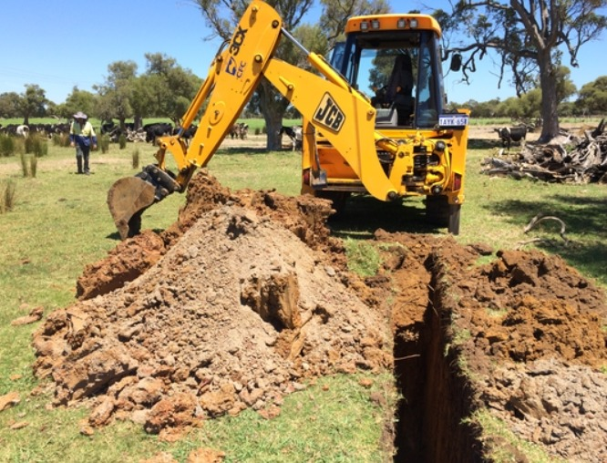
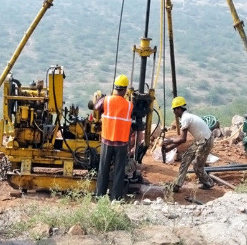
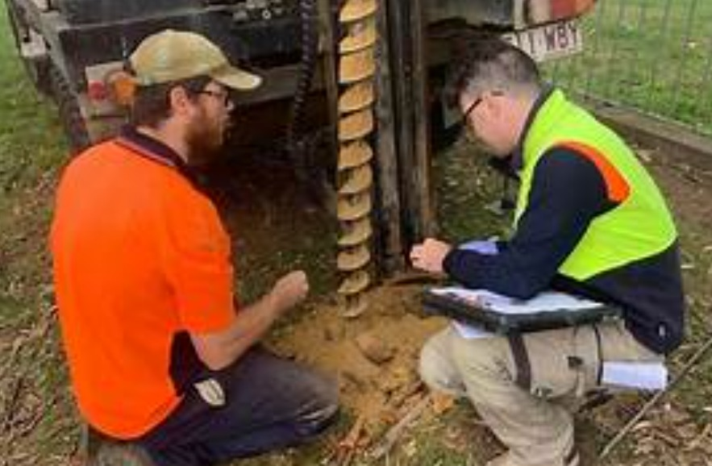
Geotechnical Investigation: Foundation for Safe and Sustainable Infrastructure
Geotechnical investigation is a vital process that evaluates the physical properties of soil and rock underlying a proposed construction site. At RoadX Design & Consultants, we conduct thorough geotechnical investigations to provide critical data that informs safe and efficient design of roads, bridges, tunnels, and other civil structures.
Applications:
Infrastructure development encompasses various critical components such as the design and construction of road embankments and pavements, which ensure safe and durable transportation routes. Bridge and culvert foundations are engineered to provide stability and load-bearing capacity for crossing structures. Tunnel excavation and support systems involve careful planning to maintain structural integrity and safety during and after construction. Retaining walls and slope stabilization techniques are employed to prevent soil erosion and landslides in hilly or unstable terrains.
Benefits of Thorough Geotechnical Investigation:
By minimizing design uncertainties and construction risks, optimizing foundation design and construction costs, and enhancing the safety and longevity of structures, the approach ensures efficient project execution while supporting environmental and regulatory compliance.
Pile Load Testing Services
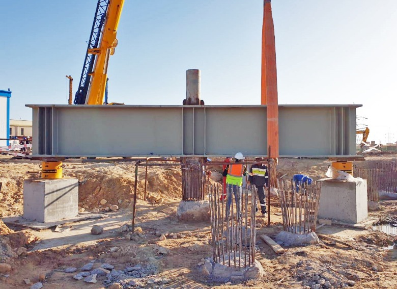
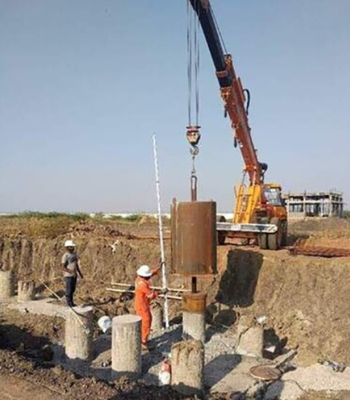
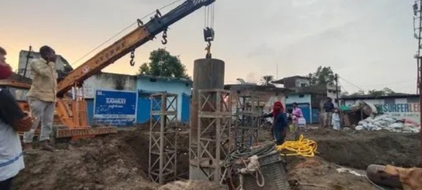
Pile Load Testing Services: Efficient and Environmentally Friendly
Our Pile Load Testing Services provide reliable verification of the load-bearing capacity and structural integrity of foundation piles. Utilizing advanced testing techniques and equipment, we ensure that your piles meet design specifications and safety standards before construction progresses.
Key Features:
Pile testing services include static load testing, which measures the response of piles under gradually applied loads to determine their ultimate bearing capacity, and dynamic load testing, which uses high-strain impact methods for quick and efficient capacity assessment. Integrity testing is conducted to detect defects or anomalies within piles, ensuring their durability and performance. These evaluations are supported by comprehensive reporting that provides detailed results, analysis, recommendations, and compliance documentation.
Why Choose Us?:
With an experienced team specializing in geotechnical engineering, the use of state-of-the-art testing equipment and technology, and customizable testing programs tailored to project-specific needs, the service is defined by a strong commitment to safety, accuracy, and timely delivery.